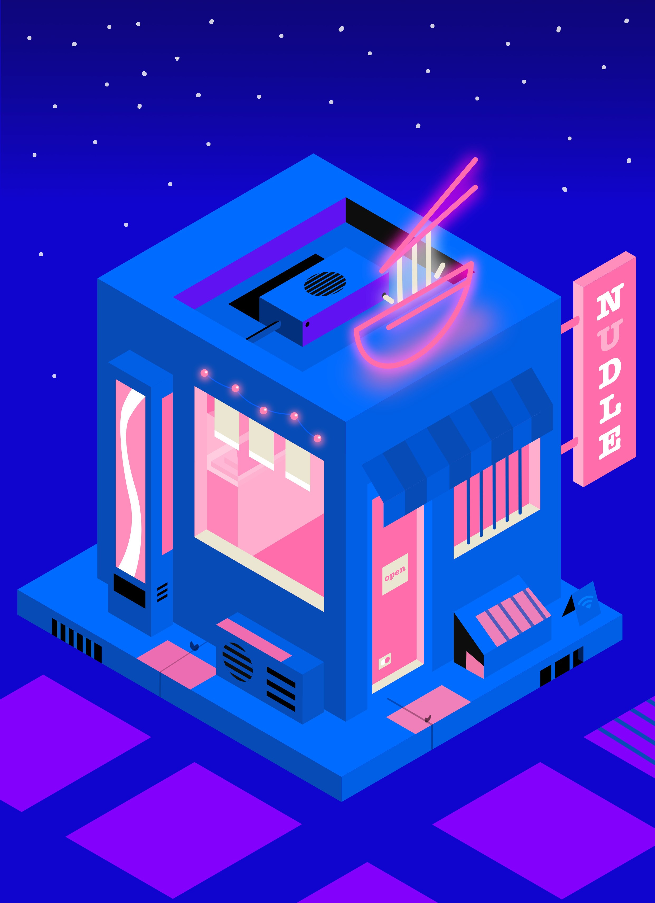

O mně
Jsem student Ekonomicko-správní fakulty Univerzity Pardubice se zájmem o fotografování a grafiku. V tomto portfoliu prezentuji mé studentské i soukromé práce. Mým cílem je vytvářet funkční a esteticky čistá řešení.
Rád se učím novým věcem a hledám možnosti, jak své dovednosti uplatnit v praxi.
Portfolio
Přehled mých vybraných studentských projektů a prací:
Fotografie
Technologie: Adobe Lightroom, Affinity

Stručný popis: Výběr mých prací, které vznikly v rámci studia multimédií a v mém volném čase. Cílem studiiního projektu bylo využítí ruzných kompozicí a práce se světlem.
Zobrazit projektVektorová grafika
Technologie: Affinity designer

Stručný popis: Ukázky mých grafických prací vytvořených v rámci studia. Cílem prací bylo vyzkošet si všechny nástroje pouzívané na tvorbu vektorové grafiky.
Zobrazit projekt
Webová stránka
Technologie: HTML, CSS, JavaScript, PHP

Stručný popis: Tento projekt spočíval ve vytvoření kompletní responzivní webové stránky pro fiktivní hotel u lesa. Webová stránka byla součástí mého maturitního projektu.
Zobrazit projekt